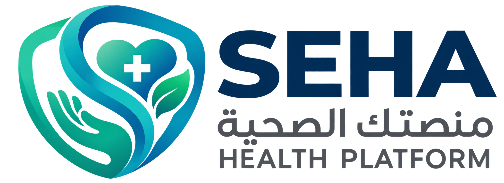

أهمية النشاط البدني
الحركة المنتظمة المناسبة لقدراتك تساعد على دعم

SEHA اكتشف خدماتناSEHA منصة تهدف لمساعدتك على الاهتمام بصحتك، وتنظيم عاداتك اليومية، واكتشاف خيارات التغذية الصحية بطريقة بسيطة وسهلة
ابدأ رحلتك الصحيةمجموعة من الخدمات اللي تساعدك تهتم بصحتك وتتابع عاداتك اليومية
تنظيم المواعيد يساعدك على الالتزام بعاداتك الصحية يمكنك الاستفادة من التذكيرات لمتابعة المواعيد والقياسات وفق إرشادات مختص الرعاية الصحية
تعرف على SEHAتنظيم المواعيدالصحية
تذكر القياسات الدورية
متابعةالعادات اليومية
تسجيل قياساتك بانتظام قد يساعدك على مراجعتها ومناقشتها مع الطبيبك
تعرف على أهمية قياس ضغط الدم ومتابعة القراءات مع المختص
تعرف على أهمية متابعة مستوى السكر وفق الخطة التي يحددها الطبيب
هذه الصفحة للتوعية فقط، ولا تسجل القياسات أو تحفظها في الوقت الحالي
التغذية المتوازنة جزء مهم من الاهتمام بالصحة تعرف على بعض العادات الغذائية المفيدة
حاول تضمين الخضراوات والفواكه ومصادر البروتين والحبوب المناسبة ضمن وجباتك
حافظ على شرب الماء بانتظام مع مراعاة تعليمات الطبيب لمن لديهم قيود على السوائل
اهتم بتنوع المكونات وكمياتها واختر ما يناسب احتياجاتك الصحية
تعرف على خيارات الوجبات الصحية ومكوناتها من المطاعم المتاحة
قسم المطاعم والوجبات قيد التجهيز
معلومات بسيطة تساعدك على بناء عادات صحية أفضل في حياتك اليومية
الحركة المنتظمة المناسبة لقدراتك تساعد على دعم
النوم الكافي والمنتظم يساعد على الراحة والتركيز والعافية العامة
الالتزام بالمواعيد الطبية ومناقشة القياسات مع المختص يساعدان على متابعة الحالة الصحية
سيتم دعم المقالات بمصادر طبية موثوقة عند استكمال المحتوى
SEHA مشروع يهدف إلى نشر الوعي الصحي، وتشجيع العادات اليومية المفيدة، وتسهيل الوصول إلى معلومات التغذية الصحية ومتابعة المواعيد والقياسات. نسعى إلى تقديم تجربة بسيطة وواضحة تساعد المستخدم على الاهتمام بصحته
المعلومات المنشورة في SEHA لأغراض التوعية ولا تغني عن استشارة الطبيب أو المختص. لا تغيّر علاجك أو جرعات أدويتك بناءً على معلومات الموقع وحدها.